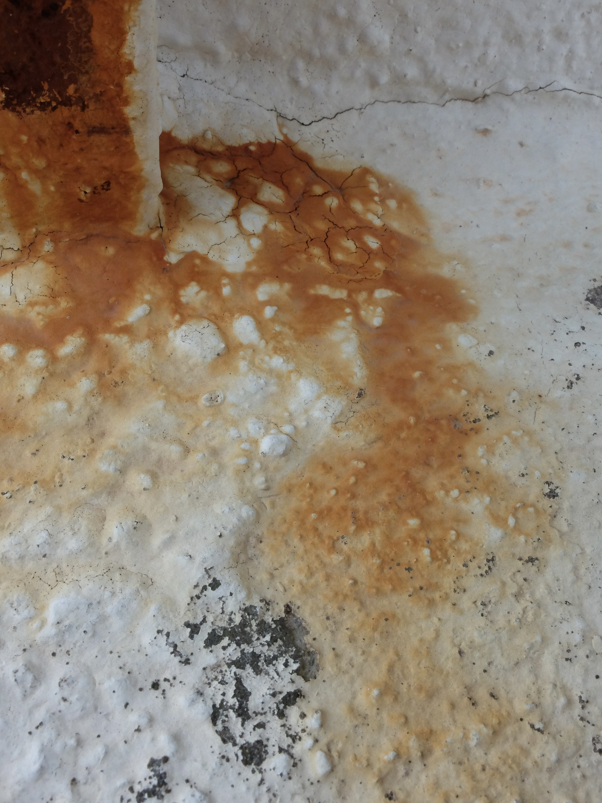
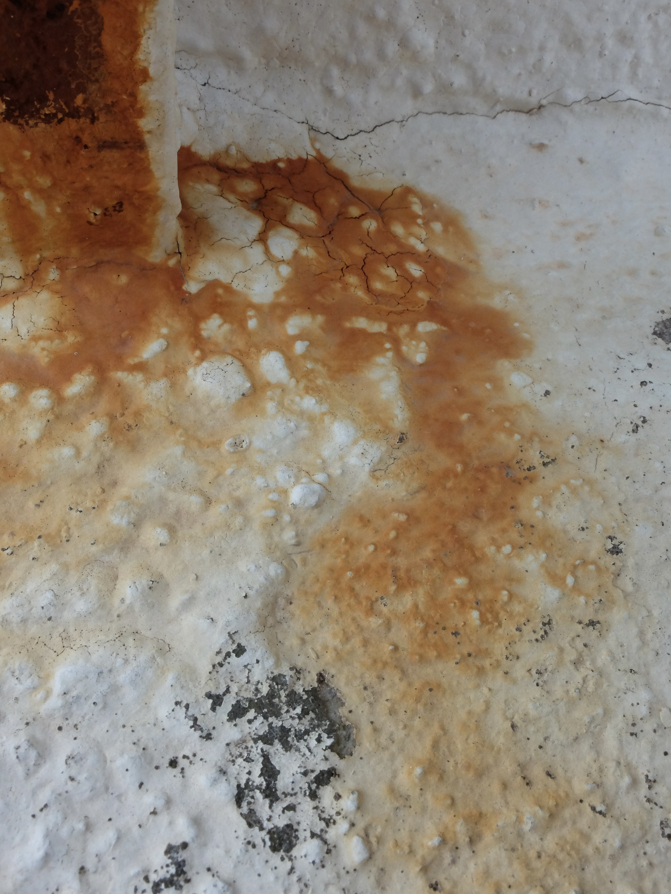
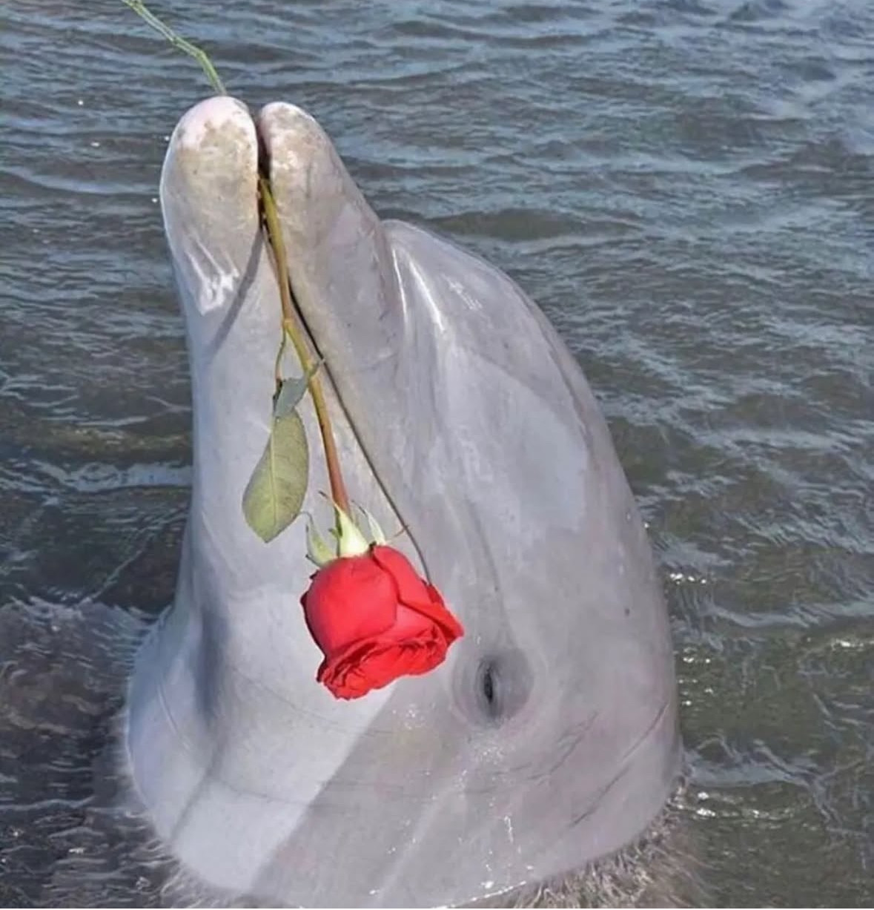
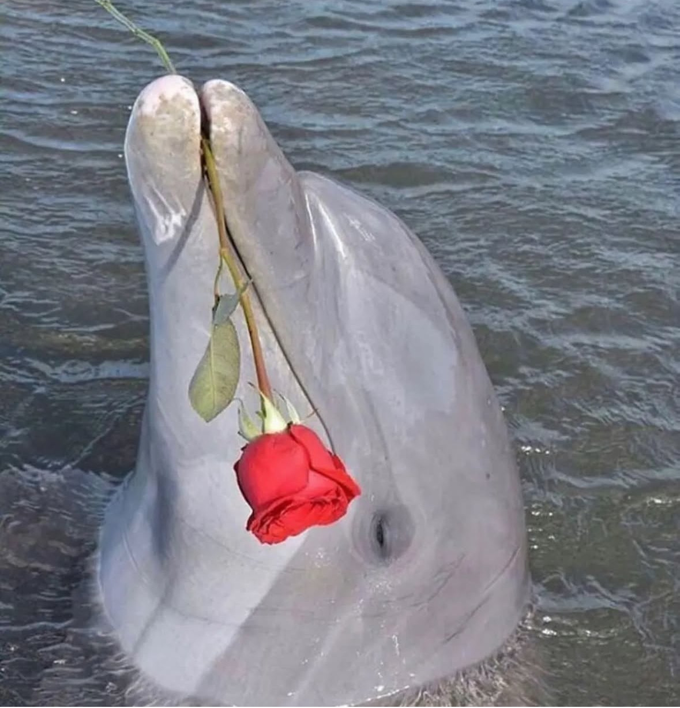
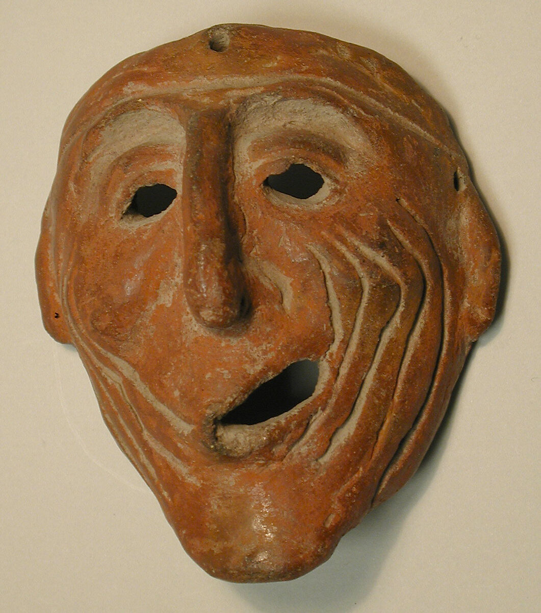
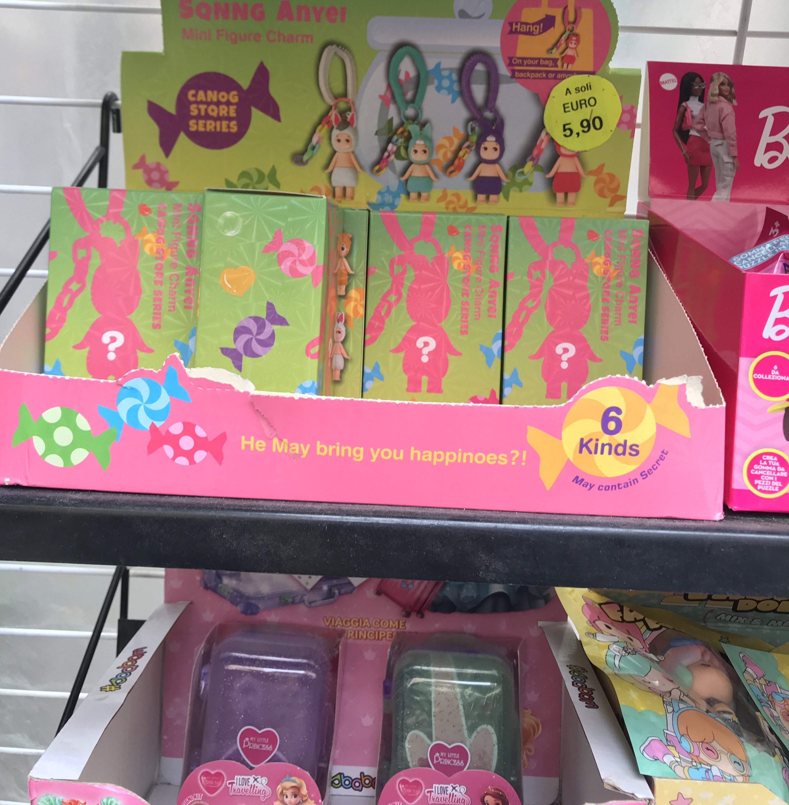
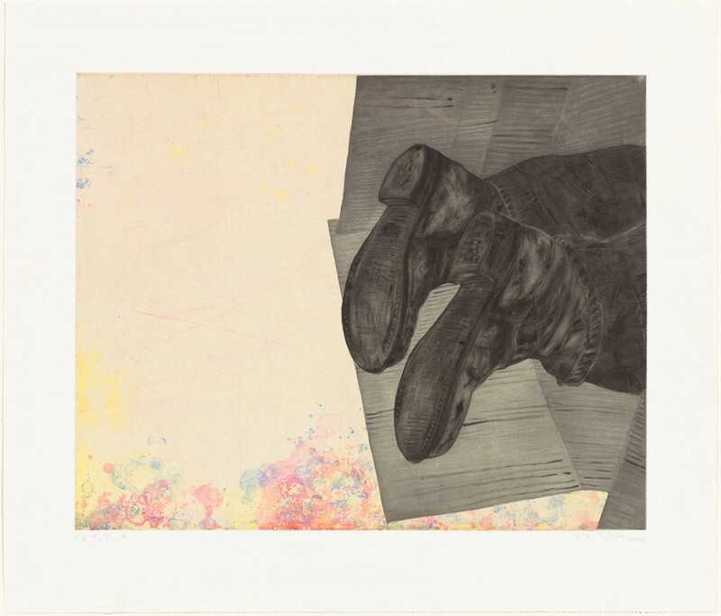
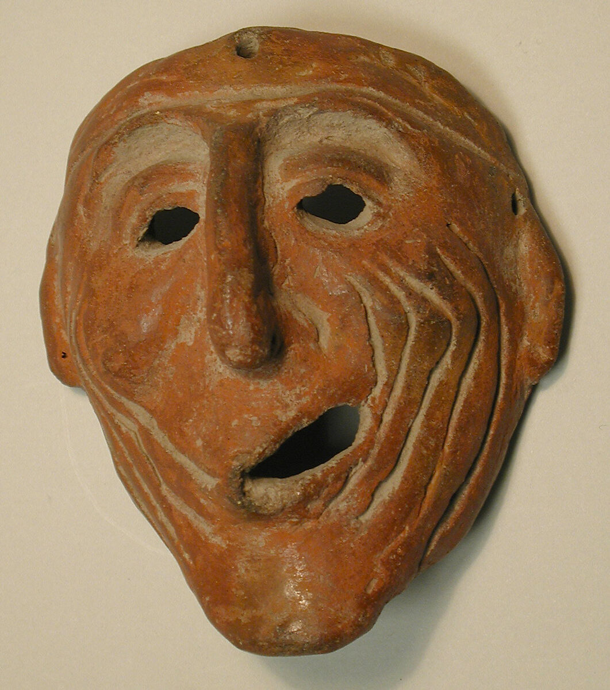
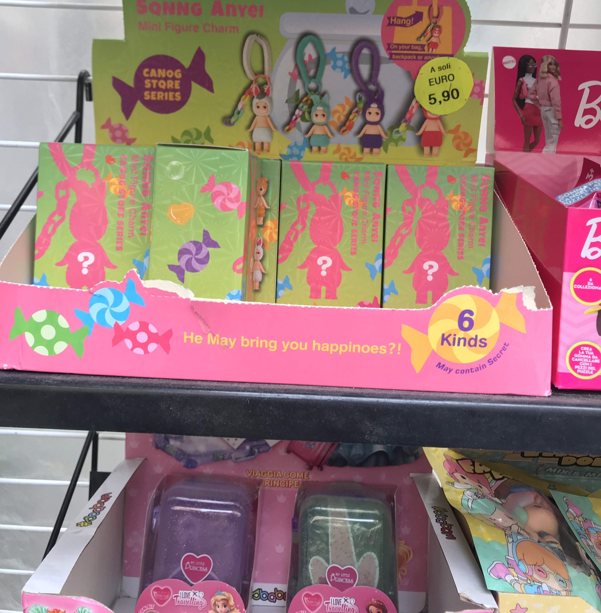
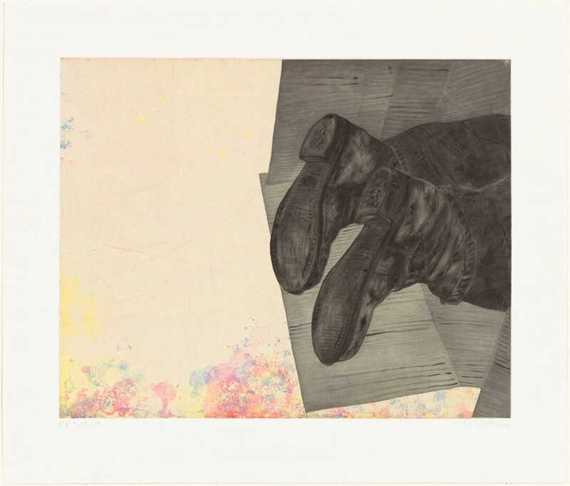

 



 





Sophia Cirignano is a poet and papermaker based in Tiohtià:ke/Montréal. She works as studio manager at Atelier Retailles, where she makes paper by hand and teaches workshops. Her writing explores materiality, food, and philosophy and has been published in Moist Poetry Journal, Headlight Anthology, Ovunque Siamo, and elsewhere. Her chapbook Baked Pears is forthcoming with Baseline Press. She holds an MA in Religious Studies from Concordia University, where her research focused on feminist and queer representations of Christian saints. Sophia has over five years of experience teaching writing, papermaking, and languages to diverse age groups. She works in English, French, and Italian.